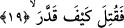

Yâni; o Kur’an hakkında ne diyeceğini iyice düşündü. Kur’an’a hangi noktadan
saldıracağını derinlemesine düşündü ve kendi içinde ne diyeceğini ve nasıl diyeceğini
planladı ve söyleyeceklerini hazırladı.
19. Canı çıkasıca, ne biçim ölçtü biçti!
Bu ifâde ile yukardaki planlamayı yapan kişinin plânlamasının ve amaçladığı hedefe
varmasının şaşılacak, hayret uyandıracak bir şey olduğu vurgulanmaktadır. Varmış
olduğu hedef ise kahrolası Kureyş’in amaçlamış olduğu hedeftir. Aynı ifâdeyi “hayret”
ifâdesi olarak almak mümkün olduğu gibi, onların bu yaptıklarını alaya alma yoluyla
övgü ifâdesi olarak almak da mümkündür ki bu onların: “Kur’an’ın bir sihir olduğu
ifâdelerinin son derece dolaşık, karışık ve düşük olduğu” yolundaki sözleridir. Ya da
“kahrolası ne biçim ölçtü, biçti” ifâdesi onların kendi ağızlarından çıkan ifâdenin bir
anlatımı olmuş olabilir. Bu takdirde onların bu sözü nakledilerek kendileri alaya
alınmış olur. Ya da Kur’an’ı takdir edip büyük görerek hayretle karşıladıkları hikâye
edilmiş olur. Bu takdirde onların sözlerinin arap dilinde benzerleri olduğunu görüyoruz.
Araplar; “Allah kahretsin! herif ne kadar cesâretli, Allah rezil edesice! Nasıl da şâir”
derler. Onlar bu sözleriyle bedduâ ettikleri kişinin ne kadar cesur ve ne kadar şâir
olduğunu bu sıfatlarda ne kadar ileri gittiğini vurgulamış olurlar ve hasedlerinden o
kişiye bedduâ ederek gerçeği ifâde etmiş olurlar. İşte burada “kahrolası ne biçim ölçtü,
biçti” ifâdesinde de hased ve kıskançlıktan gerçeği ifâde etmiş olabilirler. Nitekim bu
konuda “Allah onların canlarını alsın nasıl bu hâle geliyorlar?” (el-Munafikun,
63/4) âyetini tefsir ederken geniş bilgi vermiş bulunuyoruz.
Rivâyete göre Velid bir gün Peygamber (s.a.)’e uğrar. Rasûlullah (s.a.) o esnâda
“Hâ.Mim es-Secde” sûresini okumaktadır. Bâzı tefsir kitaplarına göre, “Ha.Mim el-
Mü’min” sûresinin baş taraflarını okumaktadır. Velid, Mahzum oğullarına; “Vallahi az
önce Muhammed’den öyle bir söz işittim ki o, ne bir insan sözü ve ne de bir cin
sözüdür. Onun kendine has bir tatlılığı ve bir güzelliği, kabûle şayan bir özelliği vardır.
O ağacın dalları meyveli, kökü ise bol sulu ve bereketli bir topraktadır”.[187] Velid bu
sözüyle Kur’an’ı taze ve yaş bir ağaca benzetmektedir. Bu ağaç bol sulu bir toprağa kök
salmış, göğe doğru yükselen dalları meyvelerle dolmuştur. Velid bu sözünde ağacın
dalları ve köklerinden söz etmektedir. Dalları meyveye durmuş, bol sulu, bereketli bir
toprağın derinlerine kök salmıştır. O bu benzetmeyi hayal gücünü çalıştırarak yapmıştır.
Kâşifî demiştir ki; onda başka hiçbir sözde olmayan tatlılık ve lezzet, başka hiçbir
kelamda bulunmayan tazelik ve ferahlık vardır. Onun en yücesi küllî saâdetlerle yüklü
yüksek meyve dalları, en aşağısı ise fazîletler ve hikmet damarlarıdır/kökleridir.
Velid sözüne şöyle devam eder: “Vallahi o Kur’an üstündür. Ona üstün gelinemez.”